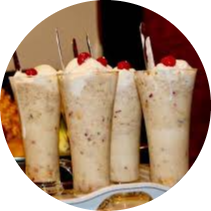

Avil Milk
is a popular drink in kerala especiallyin the malabar region.This delicious and
healthy drink can sate your hunger and
quench your thirst at the same time.
INCREDIENTS
- Half Cup roasted Avil (rice flakes)
- 2 pieces of Ripe Banana
- 3 tbsp Sugar
- 1 Cup Cold milk
- A few Chopped nuts
- 3 tbsp Peanuts
- Ice cream(optional)

PREPARATION
- In a bowl, mash banana well with sugar by using hands or a hand mixer.
- Mix it with half of peanuts, chopped nuts and cold milk (the consistency should be like a thick shake, adjust the amount of milk according to that level).
- Add in to two medium serving glasses,add the rice flakes and decorate on top with ice cream and peanuts.
- Serve soon and enjoy the taste!!